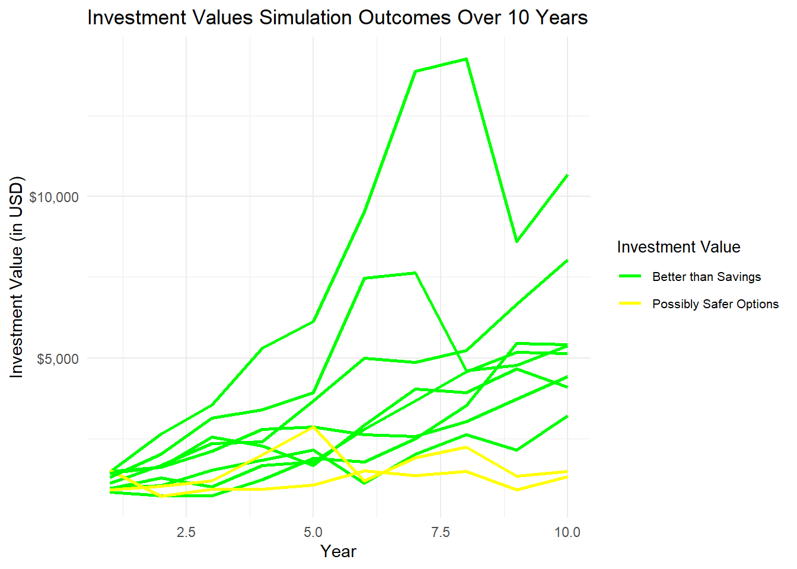

library(tidyquant)
library(tidyverse)
library(ggthemes)
library(gt)
tickers<-c("JPM")
data_stocks<-tq_get(tickers,
from = '1980-01-01',
to = '2023-3-24',
get = 'stock.prices')
returns_tidy <- data_stocks %>%
group_by(symbol) %>%
tq_transmute(select = adjusted,
mutate_fun = periodReturn,
period = 'yearly',
col_rename = 'returns',
type = 'log')
sim <- 10000
years <- 10
Initial <- 1000
AReturn <- round(mean(returns_tidy$returns),2)
SDReturn <- round(sd(returns_tidy$returns),2)
YI <- 100StochasticModellingProjectsLWhite.github.io
JPM Investment Scenarios
Libraries and Input Values
Yearly Returns
returns_tidy %>%
filter(symbol=="JPM") %>% ggplot() +
geom_histogram(aes(returns),col="purple", fill="salmon",
binwidth = 0.1) +
ggtitle("Distribution of the Yearly Returns for JPM") +
xlab("Returns") + ylab("Count") +
theme_clean() +
geom_vline(aes(xintercept = AReturn), linetype = "dashed", color = "black") +
annotate("text", x = AReturn, y = 2, label = paste0("Avg of ",
scales::percent(AReturn, accuracy = 1)),
color = "black", vjust = 1.5, hjust = -0.08) +
scale_x_continuous(labels = scales::percent)
Simulating Returns Over 10 Years 10,000 Times
a <- tibble(Simulation = rep(1:sim, each = years),
Year = rep(seq(1:years),sim),
Returns = rnorm(sim*years,AReturn,SDReturn)) %>%
group_by(Simulation) %>%
mutate(InvestmentValue = accumulate(Returns[-1], ~ .x*(1+.y) + YI,
.init = Initial*(1+Returns[1]) + YI)) %>%
ungroup()Calculating Worst, Bear, Base, Bull, and Best Case Scenarios
colNames <- c('Worst Case','Bear Case','Base Case','Bull Case','Best Case')
b <- tibble(Scenario = colNames,
Investment_Value = round(a %>% filter(Year == years) %>%
pull(InvestmentValue) %>% quantile(),2)
)
b %>% gt() %>%
tab_header(title = md("**Investment Value Scenarios**"),
subtitle = "After 10 years") %>%
tab_footnote(footnote = md("*Quartiles*")) %>%
fmt_currency(columns = vars(Investment_Value),
currency = "USD") %>%
tab_style(style = list(cell_fill(color = "#ff6961")),
locations = cells_body(rows = Investment_Value == min(Investment_Value))) %>%
tab_style(style = list(cell_fill(color = "#00cc00")),
locations = cells_body(rows = Investment_Value == max(Investment_Value))) %>%
tab_style(style = list(cell_fill(color = "#FFFF00")), # Yellow color for Bear Case
locations = cells_body(rows = Scenario == "Bear Case") # Highlight row with Bear Case
)| Investment Value Scenarios | |
|---|---|
| After 10 years | |
| Scenario | Investment_Value |
| Worst Case | −$373.64 |
| Bear Case | $2,019.33 |
| Base Case | $3,387.00 |
| Bull Case | $5,663.32 |
| Best Case | $47,168.16 |
| Quartiles | |

Distribution of Returns After 10 Years
avgIV <- round(mean(a$InvestmentValue),2)
a %>% filter(Year == years) %>%
ggplot() +
geom_histogram(aes(InvestmentValue), col = 'black', fill = 'gray') +
ggtitle("Distribution of Investment Values After 10 Years") +
xlab("Investment Value") +
ylab("Count of Simulation Instances") +
geom_vline(aes(xintercept = mean(InvestmentValue)), linetype = "solid", color = "red") +
annotate("text", x = avgIV, y = 2900, label = paste0("Avg of ",
scales::dollar(avgIV, accuracy = 1)),
color = "black", vjust = 1.5, hjust = -0.25) +
theme_clean() +
scale_y_continuous(labels = scales::comma) +
scale_x_continuous(labels = scales::dollar)
Comparing Investment in JPM to Investment in a Risk-Free Savings Account
- Forbes Interest Rates
- According to the article above, average savings account APYs are 0.46%. The best rates out there go up to 4.1% (some requiring minimum investments however)
- From the graph below and the other graphs previously, JPM is a safe investment. It is possible that having a great risk-free savings account at Capital One for example could net the same returns, but there’s a significant chance that JPM would outperform that account, making it a worthwile risk.
selected_simulations <- a %>%
filter(Simulation <= 10)
riskFreeVal <- round(1000*(1.0046**10) + 100 * (((1.0046**10) - 1)/0.0046)) #current savings acct avg interest rate 0.46%
goodAPY <- round(1000*(1.041**10) + 100 * (((1.041**10) - 1)/0.041)) #highest APYs out there (cap one, amex)
ColoredINV <- selected_simulations %>%
filter(Year == max(Year)) %>%
mutate(color = case_when(
InvestmentValue > goodAPY ~ "green", # Above highest APYs
InvestmentValue > riskFreeVal & InvestmentValue <= goodAPY ~ 'yellow', # Better than the avg APYs
InvestmentValue <= riskFreeVal ~ "red" # Below $1900
))
selected_simulations <- selected_simulations %>%
left_join(ColoredINV %>% select(Simulation, color), by = "Simulation")
selected_simulations %>%
ggplot() +
geom_line(aes(x = Year, y = InvestmentValue, group = Simulation, color = color), size = 1) +
ggtitle("Investment Values Simulation Outcomes Over 10 Years") +
xlab("Year") +
ylab("Investment Value (in USD)") +
theme_minimal() +
scale_color_manual(values = c("green", "yellow", "red"),
labels = c("Better than Savings", "Possibly Safer Options", "Worse than Savings/Loss")) +
theme(legend.position = "none") +
scale_y_continuous(labels = scales::dollar) +
guides(color = guide_legend(title = "Investment Value")) +
theme(legend.position = "right",
legend.text = element_text(size = 8),
legend.title = element_text(size = 10))